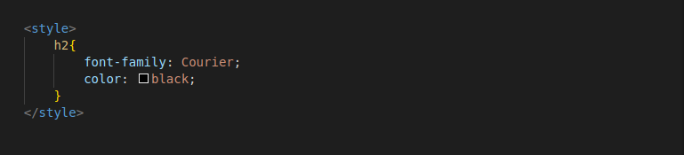
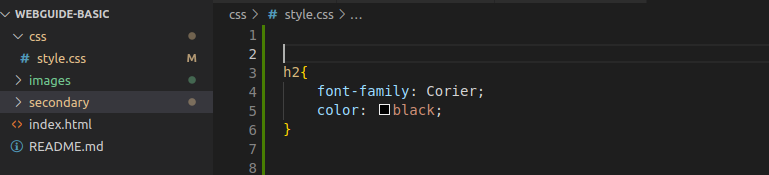
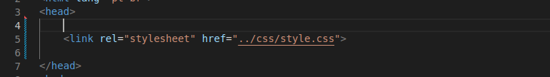

O que é CSS?
Como dito previamente, CSS significa Cascading Style Sheets (Folhas de Estilo em Cascata, em português) e é uma linguagem de estilo utilizada para controlar a aparência e o layout de páginas da web.
Ao pensarmos em um site como uma construção física, como um prédio, ou uma casa, por exemplo, se pode pensar no HTML como a estrutura "vazia", a fundação da obra, enquanto o CSS seria a decoração, ou um jeito de transformar aquela fundação em algo mais agradável e intuitivo.
Existem três maneiras para estilizar um elemento HTML com propriedades do CSS.
- 1. Inline CSS
- 2. Internal CSS
- 3. External CSS
Imaginemos o seguinte cenário, é desejado trocar a cor e a fonte do elemento "h2", com a maneira "inline". Esta mudança, como o nome sugere, ocorreria na linha do elemento, como podemos observar na imagem abaixo
O Internal CSS, também como o nome sugere, aplica o CSS de maneira interna ao documento HTML, para isso se cria no cabeçalho, um bloco de "comandos" CSS, que necessitam estar rodeados pela tag "style", que possui a estilização desejada. Veja melhor com um exemplo do cenário anterior, porém com o internal CSS.
O mais indicad, no entanto, principalmente para projetos grandes, é o external CSS. Onde se cria um arquivo css no próprio projeto, que irá conter as estilizações desejadas nos documentos html. Para isso além da criação deste documento, é necessário referênciar o mesmo, nos arquivos HTML que o usarão. Seguem as fotos do arquivo e da referência, consecutivamente.
 